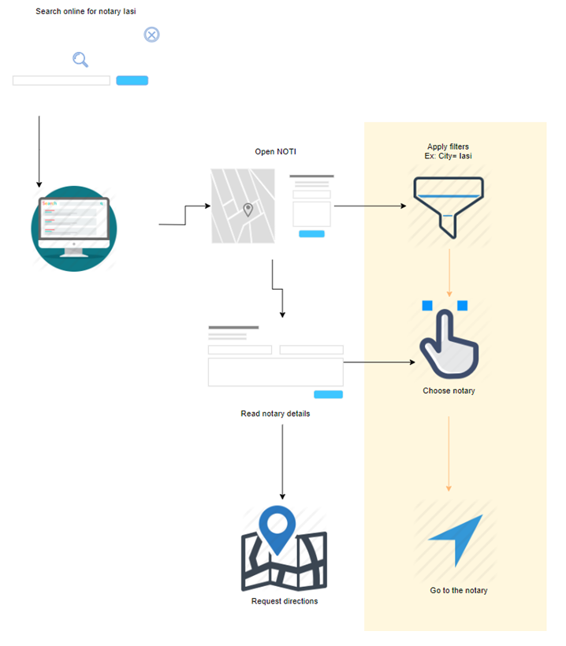

This document presents what is the Notarial Info Tool, how it is encoded and all of the requirements covered by this web application.
The Notarial Info tool is a web application designed to support the process of locating notarial offices and services in Romania. This tool is dedicated for both local and foreign citizens who might be in the need of these services. Besides the functionality of providing the office location, this tool offers useful information on this domain, explaining some of the most common situations when notarial support is needed and what should the files for these situations look like (in terms of legal consultancy, documentation and so on).
The location of the notarial offices is displayed through a map and information such as the address, services and prices, weekly schedule, contact details and reviews can be verified by the end user through a single click on a pin from the map. One special functionality added to this popup containing descriptive information of a notarial office is helping the user find his way to the notarial office in discussion, by using public transportation, if necessary.
The application offers the possibility of multiple search, providing the best fitting answer for the user’s preferences and needs. The main options for the multiple search functionality are location (with the possibility of searching the notarial offices nearby user’s geographical position), notarial services (acknowledgements, oaths/affirmations, copies of legal documents, signature witnessing, legal consultancies), price range, reviews (from one to three stars) and timetable (opened now, or by different schedules).
The application is split in 3 main parts:
The opening page contains the map of Romania with public notarial offices from Romania displayed through map pins, the menu for the multiple search, each criteria having its own input fields of type checkbox for the user’s choice and input fields of type text for the case of the price ranges. One additional element useful for the user in the interaction with the map is a popup displayed by clicking on an office pin from the map which will show more information about the respective notarial office. The upper menu, containing the tabs of the web application (Home - current page, Notaries in Romania, Contact) and the search bar with the property of correcting users spelling in case they’ve mistaken a word, complete the list of components for this web page.
The “Notaries in Romania” page has the role of informing the citizens, locals or foreigners, about notaries in general, what services they provide and why are they necessary together with some of the most common examples of moments that the majority of citizens get to live in life (buying a house, needing a legalized copy for employment file, selling a property, needing approval to represent another citizen in different situations and some more), offering them a list of guidelines considering the legal aspects, so that they will be well informed and prepared.
Another important component of the application is the Directions page which can be reached by pressing the “Directions” button from the popup containing more information about a specific notarial office. This page will help the end user locate himself on the map, together with his destination and will show him the way, providing a list of public transportation able to take him there if the distance is not smaller than the difference between two bus stops.
NOTI tool will be built with an open-source web scripting language, PHP version 7. Data will be stored in a MySQL database, also open source. The user interface will be developed in HTML, CSS, and JavaScript, the last one being used especially for the integration of the map into the website.
In order to display the geographic location of a user’s device on a Google Map, the browser’s HTML5 Geolocation feature with the Maps JavaScript API will be used. This option has been chosen as for this web application it is essential to help the user locate himself in order to have a clear picture of what his options are. Therefore, the application must support the W3C Geolocation standard so that it will have the geolocation functionality available. This approach is the easiest and most fully-supported, providing a more accurate result than the browser’s function of using the IP address to detect a user’s location.
The data from MySQL will be get from data.gov.ro, the central access point for open data sets delivered by public administration authorities and institutions. The table containing all public notarial offices from the country has almost 3000 entries from 15 different counties of Romania. The choice of using a MySQL database was made based on the following facts: it is one of the first options for web applications in general being reliable and easy to use, it is ideal for both small and large applications, it is very fast and uses standard SQL. Besides this, it is the most popular open-source database management system used together with PHP programming language. As a result of the close connection between PHP programming language and MySQL database management system, the phpMyAdmin MySQL database system was developed using PHP language, being ideal for database management on a web browser. Using this open-source application, the basic CRUD operation are easy to be used and also SQL queries can be used for more complex operations on data.
The application will be able to run on any web server that supports PHP 7 and has a MySQL database. The application code will use Git version control, and all commits will be archived in a designated repository which can be made available to other members.
From the business point of view for this website application there are a few elements chosen to make the user’s interaction more pleasant. Taking into consideration that Noti is an informative website, its target group is composed of people with questions, looking for options and answers. The legal domain doesn't come in handy for the people not related with this area, therefore, this website should convey certain subconscious messages to the users such as trust, confidence and security. According to the psychology behind type choices, the font type for the user interface evokes a group of emotions. Since we are interested in showing stability and reliability, the best choice is the Sans Serif group of typos and considering that our message should be concise and clear, the proper font type is Calibri. As it is common to the user’s eyes, he or she will perceive it as comforting. For the main color scheme of the website, the black/white one was selected as it sends a message of seriousness. Our website is not fun, nor a media channel, it only contains useful and real information so we chose to say this through this color scheme as well.
NOTI is a website meant to help and inform so choosing a minimalist web design was the best choice. While applying this element specific to modern design, we simplified the complex processes and organized content reducing user’s stress. By not crowding all elements in one page, we let the users see what they want to see only: where is the notarial office fitting they need located. Yet, this is not all. When our users find the place they want to go to, our element of surprise is giving him options to get there so that if they are in a rush, as most people generally are nowadays, they won’t have to remember the address, copy it on a navigation application in order to get to it or search for other valuable minutes what is the most efficient transportation to get there.
The purpose of this website is send loud and clear by its name (Noti), its motto (“Notary was never closer to you”) and the map with the notaries displayed on the front page. There is no doubt of the accuracy of our data as it was taken directly from the official list of notaries in Romania and we tell this story to our users through the About page. All these elements are responsible for earning the trust of our users and last but not least, our Contact page makes as approachable. By providing an address, a phone number and an e-mail we can be contacted through, we induce to the user the idea of dealing with “real people”, making them even more confident and comfortable trusting our website.
